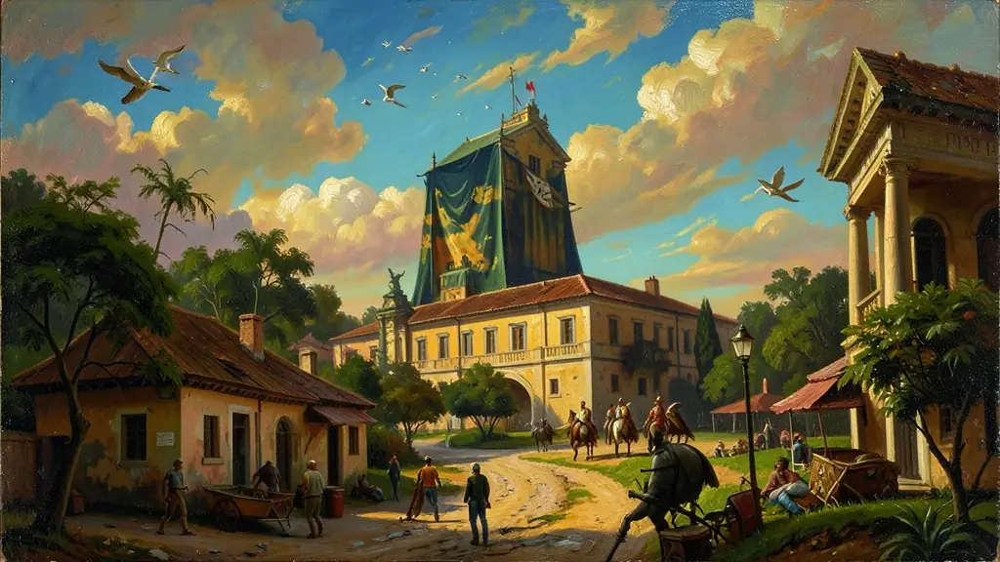

Capítulo 01
1. O Barão do Rio Branco: O Arquiteto do Mapa
José Maria da Silva Paranhos Júnior, o Barão do Rio Branco, é o patrono da diplomacia brasileira. Atuando como Ministro das Relações Exteriores de 1902 a 1912, ele resolveu disputas de fronteira com quase todos os vizinhos sul-americanos. Sua maior vitória foi a compra do Acre da Bolívia (Tratado de Petrópolis), negociando compensações financeiras e territoriais. Ele tirou o Brasil da órbita exclusiva da Europa e aproximou o país dos EUA.
Capítulo 02
2. Brasil nas Guerras Mundiais
Na I Guerra Mundial, o Brasil participou de forma modesta enviando missões médicas e navios de patrulha após submarinos alemães afundarem navios mercantes luso-brasileiros. Na II Guerra, a participação foi robusta com a FEB e a FAB na Itália. Essa aliança com os EUA (Política da Boa Vizinhança de Roosevelt) trouxe o capital necessário para a industrialização pesada do Brasil (Siderurgia).

Capítulo 03
3. A Política Externa Independente (PEI)
Entre 1961 e 1964, o Brasil ousou desafiar a lógica da Guerra Fria. Jânio Quadros condecorou Che Guevara e buscou o reatamento de relações com a URSS. O país queria ser um líder dos 'Não-Alinhados', focando no desenvolvimento nacional e na autodeterminação dos povos. Essa autonomia causou desconfiança em Washington e foi um dos fatores que contribuíram para o golpe de 64.
Capítulo 04
4. Integração Regional: O MERCOSUL
Com o fim das ditaduras na América do Sul, Brasil e Argentina deixaram de ser rivais militares para serem parceiros comerciais. O Tratado de Assunção criou o Mercosul, visando a livre circulação de bens e pessoas entre Brasil, Argentina, Uruguai e Paraguai. Hoje, o bloco enfrenta crises de identidade política, mas continua sendo o principal mercado para os produtos industrializados brasileiros no exterior.
Capítulo 05
5. Século XXI: BRICS e Multilateralismo
O Brasil consolidou seu papel como líder das economias emergentes. Através dos BRICS, o país busca reformar instituições mundiais como o FMI e o Banco Mundial, pedindo mais voz para o Sul Global. A diplomacia brasileira defende a ONU como o único fórum legítimo para resolver conflitos internacionais, recusando-se a apoiar invasões unilaterais ou sanções que não passem pelo conselho de segurança.
A formatação dos alicerces contemporâneos e consolidados das tradições consagradas das chancelarias magistral respeitosas incólume da respeitada nas diretrizes de estabilidades das mediações do majestático formatação histórica formidável na fundação das bases estruturais sólidas delineamento formulada pela intelectualização apoteótica pacifista fronteiriça do monumental pacificador barão na chancelaria e do seu genial expoente de contornos apaziguadores do panteão diplomático do gigante de Rio Branco balizada no pacífico enraizamento não-intervencionista na imaculada respeitabilidade basilar da conciliação da autodeterminação continental incólume impenetrável latino da irmandade em seu asilo e das negociações consagradoras do Uti Possidetis sem eclosões amargas das guerras e esbulhos do pacifismo magistral pacificador referenciado da doutrina altiva internacional brasileira.
Bifurcada didaticamente nestes longínquos traços pragmáticos exímios nas alternadas flexões globais transitou altivamente e se consolidou astutamente no distensionamento equilibrador inalienável nevrálgico não subalterno pendular do esgueiramento das cobranças das pressões das potências varguistas ambíguas alinhadoras na guerra e da consolidação formidável posterior ideologia formidável ousada magnânima altiva pioneira de soberania diplomática e apaziguadora do rompimento nevrálgico inatingível genial ousadia autônoma da formulação diplomata magnânima no alinhamento neutral sem tutela subserviente as pressões no pioneirismo visionário do formidável corolário das políticas externa audaz africana independente pragmáticas da PEI Jânio-Janguista dos ouros dos trópicos de alinhamentos do terçeiro e do restabelecimento chinês soviético autônomo inatingível magistral diplomático.
Ao examinar a projeção exames globais é indispensável referir o pináculo e o clamor exótico na magnitude estonteante global magnânima diplomática expansiva e incólume carisma na ofensiva avassaladora altiva conselheira propulsora mediadora das cooperações apoteótica consolidação expansionista da diplomacia do expansionista eixo consolidador incólume do orgulho do panteão sul-sul lulista referenciada do G20 agigantado incólume mediador de pacificação incólume do nuclear Irã com aplausos irrefutável e dos gigantes de cimento solidificados articulados blocos dos BRICS na transigência contestatória a unipolaridade dolarizada e na força propulsora inalienável altaneira pacificadora sem veto diplomata ao sul do globo gigante reavivado majestático no clamor irrefutável da américa das relações nas paridades justas.
Fonte: CERVO, Amado Luiz. Relações Internacionais Latino-Americanas. UnB, 2013.
Atividades interativas
Questões para fixar
O Barão do Rio Branco é considerado o maior diplomata da história do Brasil. O principal pilar de sua atuação foi o princípio do 'Uti Possidetis', que significa:
A Política Externa Independente (PEI), implementada no início dos anos 1960, tinha como objetivo: